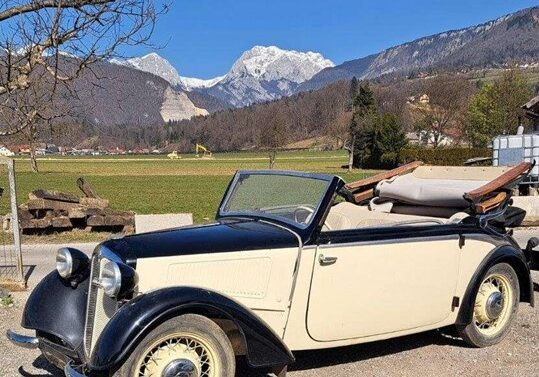
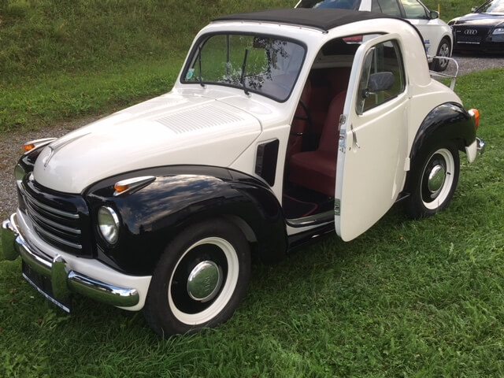
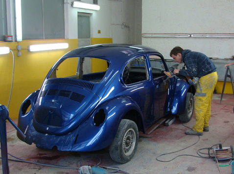
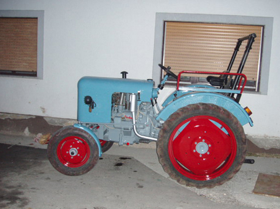

Klub gorskih tekačev Papež
Dušan Papež je leta 2001 ustanovil klub, ki organizira gorske teke; podjetje je generalni pokrovitelj Teka na Grintovec.
Družinsko podjetje iz Podjelš pri Kamniku · od leta 1985
Slogan, ki ga stranke poznajo že vrsto let. Avtokleparstvo in avtoličarstvo za osebna in tovorna vozila, cenitve za zavarovalnice, nadomestno vozilo in obnova starodobnikov. Vse pod eno streho, v delavnici, ki jo že drugo generacijo vodi družina Papež.

Zgodba
Leta 1985 je Dušan Papež odprl obrt Avtoličarstvo Papež Dušan s.p. Najprej je sam v majhni garaži ličal avtomobile, nato sta z ženo zgradila novo delavnico. Dejavnost je razširil na avtokleparstvo, uvedel lastno mešalnico barv in lakirno komoro ter zaposloval nove sodelavce.
Leta 2008 je vodenje podjetja prevzela hči Nina. Leta 2024 se je podjetje preoblikovalo v Avtoličarstvo, avtokleparstvo Papež d.o.o., leta 2025 pa je praznovalo štirideset let delovanja. Ekipo danes sestavljajo izkušeni strokovnjaki in mladi sodelavci; vajenci se lahko ob delu priučijo obrti in po šoli redno zaposlijo.
Restavriranje
Obnova starega vozila zahteva znanje, potrpežljivost in natančnost. V delavnici poskrbimo za celovito obnovo: od karoserije do barve in notranjosti.



Storitve
Škodni primer
Pri škodnem dogodku uredite vse formalnosti na enem mestu. Cenitve vozil opravljamo za Zavarovalnico Triglav.
Skupnost
Dušan Papež je leta 2001 ustanovil klub, ki organizira gorske teke; podjetje je generalni pokrovitelj Teka na Grintovec.
Ob štiridesetletnici je podjetje sredstva namenilo v dobrodelne namene.
Družina Papež in zaposleni so ob 40-letnici predali darilni bon fundaciji, ki podpira mlade, ki so preboleli raka.
Kontakt
Delovni čas